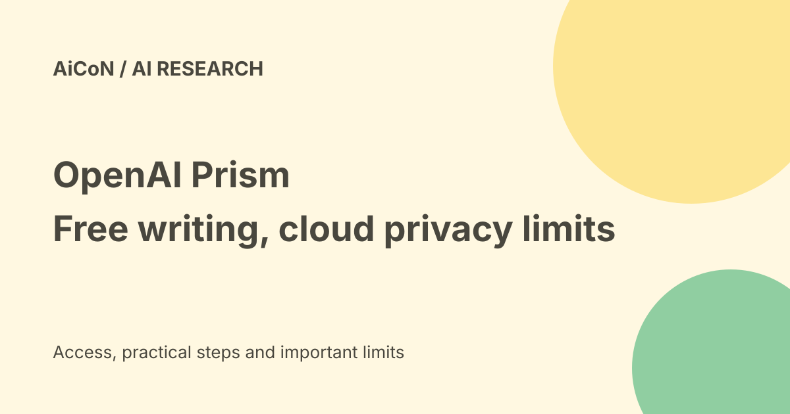

OpenAI Prism: free LaTeX writing, eligibility and cloud privacy
Prism is OpenAI's cloud-based LaTeX workspace for scientific writing and collaboration. The current product page calls it free with unlimited collaborators. Current Help adds account-history eligibility restrictions and says it does not use zero-data-retention processing.

What Prism does
LaTeX is a document format widely used for papers with equations, references and figures. Prism combines a LaTeX editor, compilation into a PDF, collaboration and an assistant that works with document context. The current product page describes ChatGPT and Codex integration.
The assistant can suggest LaTeX, diagnose errors, proofread and suggest literature. A suggested reference is not proof that a paper exists or supports your sentence. Open the original paper and check title, authors, identifier and quoted claim.
Current access is narrower than the launch
OpenAI's current Help says Prism is available on personal ChatGPT Free, Go, Plus or Pro accounts that are not and have not been members of a Business or Enterprise workspace. That account-history restriction is stronger than the launch's general personal-account wording.
Help still describes expansion to Business, Enterprise and Edu as future work. A university email does not prove eligibility or organisation-level privacy protections. We did not sign in or test an Indian account.
Free does not mean every future AI feature is unlimited
The product page describes a free workspace with unlimited collaborators, and the launch announced unlimited projects. The launch also said more powerful AI features would become available through paid ChatGPT plans.
Unlimited collaboration is not a documented promise of unlimited model usage forever. This guide does not quote an unverified Indian price or a specific current model quota.
Model names: launch versus today
Prism launched with GPT-5.2 in its announcement. Current Help says frontier models; the product page mentions ChatGPT and Codex. We did not inspect a model picker or establish a specific current model.
The corrected archived post named a later flagship. A general OpenAI flagship does not prove what Prism uses. This guide avoids substituting a different model name without product-specific evidence.
A careful first project
- Check the current eligibility wording and your account history.
- Review model-improvement controls and the institution's upload rules.
- Start with public or fictional material, not an unpublished confidential result.
- Create a project or use Import for a folder or ZIP with LaTeX files.
- Ask for a small change, review Keep/Undo choices and compile again.
- Read the resulting PDF and check equations, citations and figures.
- Export a backup before major edits or moving work.
No project, collaborator invitation or account connection was created for this guide.
Import, export and backups
Current Help supports importing a folder, a ZIP or drag-and-drop project files. To move from Overleaf, first download the source ZIP, then import it. Preserve bibliography files, images and relative file paths.
Help says project-name menu Export downloads a compressed copy. Comments are not currently included inZIP backups, and comment positions may not be recoverable after an issue. A source backup is therefore not a complete copy of every collaboration detail.
Git integration and Zotero group libraries are not currently supported according to the checked Help. Individual Zotero libraries are a separate route. Do not assume an institute's Git workflow automatically syncs.
Privacy and retained data
Help says users control whether data helps improve OpenAI models, consistent with the privacy policy. Review your actual account settings before sharing a draft. Turning training off does not itself establish no retained logs, no human review or a regional-residency guarantee.
OpenAI's data-controls Help separates model training, memory, export and deletion. It also warns that feedback may allow the associated conversation to be used for training. Do not treat a single setting as permission to upload someone else's research.
The Prism Help explicitly says no current Zero Data Retention option, retained request logs, and no committed timeline for a no-text-storage/no-review privacy mode or EU-only residency. The retrieved Help does not give a precise log-retention duration.
Sharing and scientific review
Link-based anyone-can-edit sharing is not supported; editors must be added as collaborators with a Prism account. Anyone-can-view links are different and can widen the audience. Keep unpublished work private until its owner approves sharing.
Inspect final PDF pixels, equations, citations, tables and figures before submitting. Successful compilation does not prove scientific validity. Use the right human review for authorship, data rights, journal rules and factual conclusions.
Frequently asked questions
Is Prism a local editor?
No. It is a cloud workspace.
Does the launch prove GPT-5.2 is still the only model?
No. Current model details were not tested.
DoZIP backups include comments?
Current Help says no.
Can every personal account use it?
Current Help excludes accounts with present or past Business/Enterprise membership.
What changed since the earlier post?
The two Prism archive versions are combined. This guide adds current eligibility, log-retention limits, model-name uncertainty, view/edit sharing differences and incomplete-comment backups. It does not repeat an unverified flagship-model claim.
Sources: Current product page · Launch announcement · Current access, privacy and troubleshooting · Account data controls. Checked 8 October 2026.